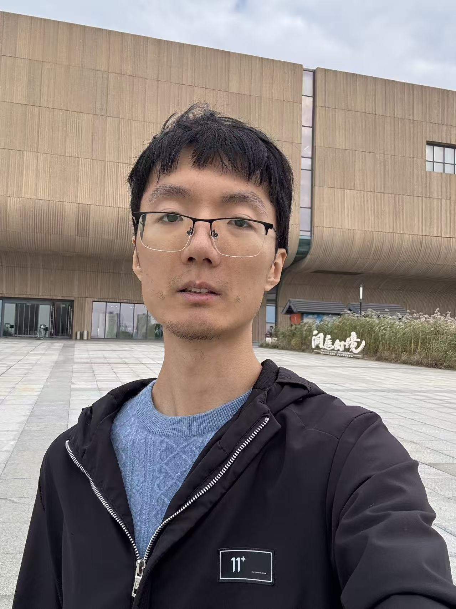
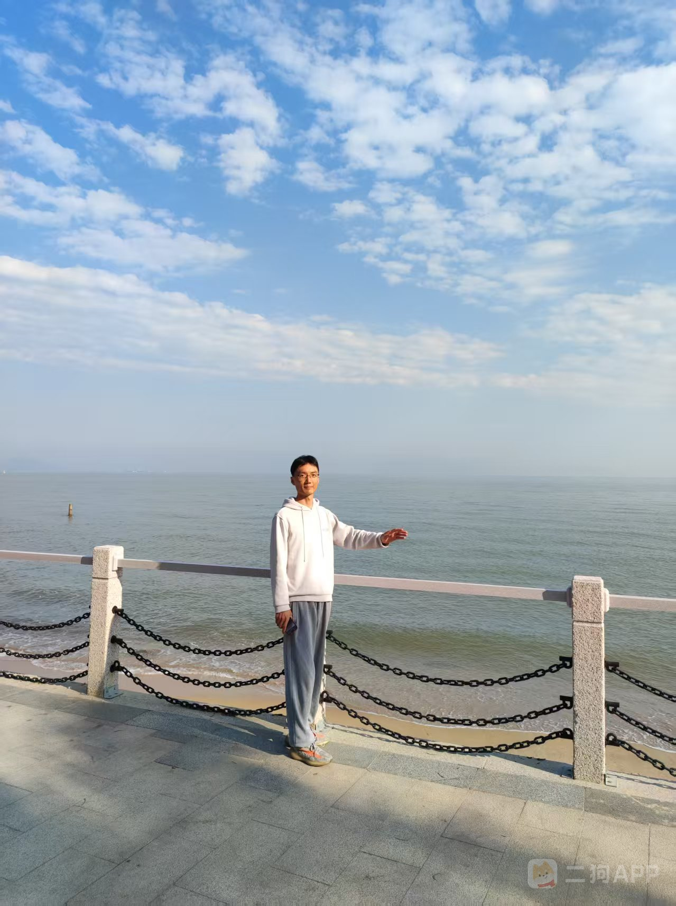
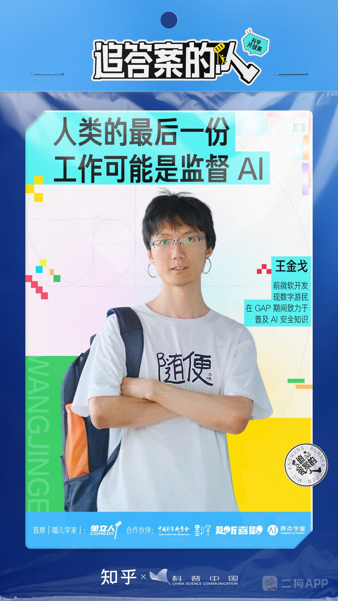
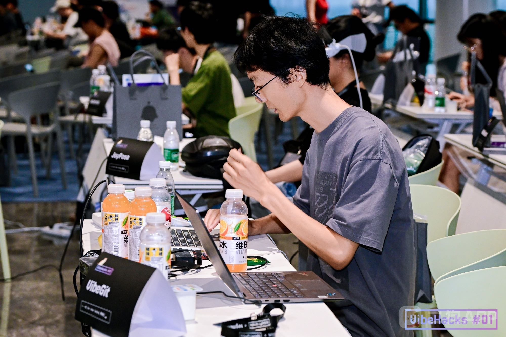
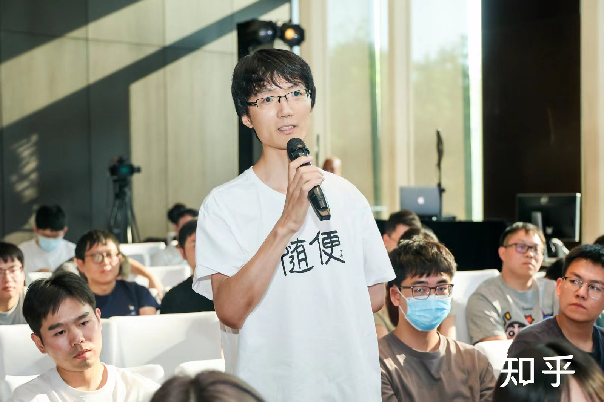

写给有缘人
93年生人，程序员，写作者，探索者。
稍微偏离主流路线的人，正在寻找同路的你。
关于我
出生
1993年，河南平顶山
学历
北理工本科
中科院硕士
工作
曾在旷视科技、微软、西湖大学工作过，现在在安远AI
家庭
独生子
四线城市工薪家庭
身材
181 cm，58 kg
偏瘦，努力吃胖中
资产
（北京）没房没车
家境普通，爸妈在学校工作，爸爸是老师，家庭关系简单。两人都已退休，退休金足够他们花销。虽然没攒下多少财富，但给了我一个比较安稳的成长环境，也不需要我补贴家里。
这几年走了些弯路，也积累了一些经历：大厂待过，科研做过，一个人用一年时间把国内许多地方走了个遍，体验了数字游民和自由职业是什么感觉。现在再次落脚北京，做自己近几年最在意的事——AI安全。
关于收入：按照我的消费水平来看，目前收入足够两个人花，没有财务焦虑。但也没有太多积蓄，北京买房仍然比较困难。所以如果你对物质条件有比较强的需求，我并不是一个在此方面足够上进的人。
我这个人
我是一个稍微偏离主流路线的人。我很难说服自己把赚更多的钱、买更大的房子当成人生的核心目标。它们只是工具，不是目的。我更关心如何过一种真实的生活——有意思的工作，有意思的人，有意思的去处。
科技在加速发展，未来最重要的课题是，如何保护属于人自己的那份价值。我的物欲不高，不需要很多钱才能满足，但我有许多精神上想要探索的东西。
喜欢的事情：
读书是我最稳定的爱好。以前偏爱文学，刘慈欣、曹雪芹、王小波、三毛、鲁迅、陀思妥耶夫斯基、黑塞……什么都读。工作后开始喜欢社科，经济金融、医学、营养学、心理学、政治学、社会学等等，特别享受学到新东西的感觉。
音乐方面，高中喜欢港台流行，大学迷民谣，后来又爱上了日本音乐和古典钢琴，最近几年更喜欢摇滚。听过不少音乐节、LiveHouse和演唱会。唯一的偶像是王菲。
经常自己做饭，享受做菜的感觉。自己随便做做都比外面吃的舒服。但我也经常探店，特别是地方特色小吃。大众点评4级选手。
喜欢在阳光明媚的日子出门溜达，逛公园、逛商场、压马路都行。最常去的是各个书店，大部分书都是在书店读的。
除了本职工作，我在知乎写了些东西，积累了两万粉丝；偶尔在小红书和B站发发内容；2025年还创办了一个AI安全社区。
爱情观
在我看来，爱情是理性构筑的世界里为数不多的乐园。我们在爱人面前卸下伪装，做一会儿真实的自己。但为了体会纯粹的爱情，我们又不得不充满理性，辗转于世俗之间。
年轻的时候，我以为爱情是把对方放在自己之上的那种奉献。后来才明白，那多半不过是一时的头脑发热。现在我更倾向于另一种理解：爱情是两个势均力敌的人，因为彼此吸引而选择在一起，又在相处中生长出超越利益得失的情感羁绊。
年龄越大，人们越不愿谈论爱情，似乎它并不存在。更应该谈的是婚姻、门当户对、搭伙过日子之类的东西。这固然没错，但未免可惜。人在任何时候都有追求美好的权利，而我依然愿意相信，成熟并不意味着放弃心动，只是更懂得在现实中守护它。
另一半
我对外在的标准其实要求不多，只希望对方瘦一点（主要是因为我自己比较瘦）。长相方面我会有一定的判断，但和大众审美并不完全重合，所以也不好说具体喜欢什么样的。身高、职业、家乡、收入，没有具体的门槛。
内在方面，我希望她是：
不需要会打扮，不需要很精致。不要落入消费主义陷阱，有自己的审美和喜好，有内心的追求。
热爱学习，乐于探索未知。最好有一些自己真正喜欢的事，不管是什么领域——种花、跑步、研究食谱，只要是发自内心的热爱，就值得尊重。
我希望她追求健康的生活方式，情绪比较稳定，遇到问题愿意沟通，而不是让矛盾在心里积累。（这一点我也在努力改进）
关于男女分工：我不算典型的女权主义者，但很支持男女平权。我希望她不被陈旧的观念束缚，不觉得自己必须为了家庭放弃自我。生育这件事可以认真商量，但不会是我催促她的理由。
三观接近，比什么都重要。如果我们对“何为良好生活”有着差不多的答案，很多事情就自然好谈了。
向往的生活
我希望我们都有着开放的心态，坦诚相待。可以做各自的事情，不必时刻黏在一起，但只要想到对方就能很安心。
过着平淡但又有盼头的生活。互相照顾，享受旅途中的快乐与辛酸，充实地过完这一生。
最近Gap和旅行的经历让我更热爱我们的地球，也更想和喜欢的人一起去看看这个世界。无论是国内的山川湖海，还是国外的城市乡村，都有很多美好的地方值得我们去体验。如果能有机会旅居或偶尔去不同地方体验生活，那就更好了。
不需要住豪宅开好车，但希望我们有时间和自由去做真正想做的事。
坦白说
以前比较理想主义，感情上遇到过一些挫折，也因为过于挑剔错过了一些缘分。后来花了不少时间反思，也补了很多亲密关系方面的理论知识，似乎想明白了很多。
现在，我应该能做到比以前更包容，也更需要对方。不再觉得“宁缺毋滥”是什么值得骄傲的态度——它有时候不过是在给懒惰和逃避找借口。
一转眼三十多了，结缘可遇不可求，但也要发挥主观能动性，所以才认认真真写了这些。
如果你读到这里，觉得和我有些相似的地方，或者对我这个人有些好奇——我觉得那就已经够了，可以来聊聊。
找到我
知乎是我深度表达的地方，在那里可以看到我在工作和生活中的更多思考。如果你在知乎也有账号，可以去看看@王金戈，觉得感兴趣的话，给我发私信，我一定回复。
也可以通过小红书@金戈或者B站@金戈大王找到我，那里有很多简短但充满生活气息的内容。当然，如果我们有共同好友，也可以通过他们联系我。
不需要精心措辞，就像平时和朋友说话一样写给我就好。
照片




